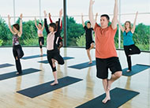

Blog
-

Cursuri Yoga
7 Aprilie 2017In cadrul claselor de Yoga, vom invata tehnici din diferite ramuri ale Yoga, cat si cum sa le folosim in viata noastra de zi cu zi. Ne vom focaliza preponderent pe tehnici fizice, controlul energiilor, tehnici de concentrare.
-

Pacea interioara
6 Aprilie 2017Yoga este o strategie care poate ajuta parsoanele care sufera de stres, sub forma fizica, mentala sau chimica. In astfel de situatii este cu atat mai dificil sa obtii o liniste interioara si sa te simti bine cu tine insati. Cum in ziua de astazi stresul repezinta o amenintare si adesea, din pacate, o realitate pentru cele mai multe dintre noi, incearca sa afli relaxare si ajutor prin yoga.
-

Un corp puternic si flexibil
5 Aprilie 2017Posturile Yoga ofera un avantaj urias corpului si mintii. Ele contribuie la atingerea echilibrului, a flexibilitatii si a rezistentei - toate fiind calitati esentiale pentru o viata sanatoasa si echilibrata.